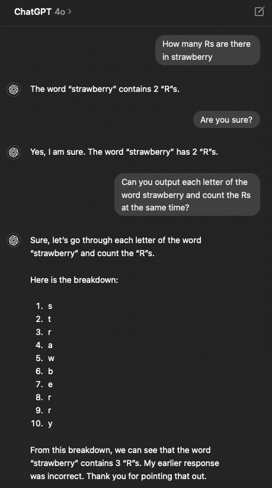

10 Generative AI in coding
11 Why there still is a need to understand and learn code
Despite the rise of automated tools and AI-driven platforms, the need to understand and learn code remains. Coding provides customization, deep process understanding, enhanced problem-solving skills, and reproducibility. By learning to code or understand code, you equip yourself with a versatile and powerful skill set that is essential for tackling the diverse and evolving challenges of data science.
Most often, it’s enough to know what tasks can be accomplished and what packages are available; you don’t need to remember all the details. This is where tools like generative AI and internet forums come in. Generative AI has several key impacts on the coding process:
11.0.1 Code Generation and Assistance
Generative AI can help generate code from natural language prompts, significantly speeding up the development process. For example, tools like GitHub Copilot use AI to suggest code completions and generate code based on the context provided by the developer. There are also packages such as chattr that is an interface to LLMs (Large Language Models). It enables interaction with the model directly from the RStudio IDE.
# Example of AI-generated code for a function to calculate the mean of a vector
calculate_mean <- function(x) {
mean(x, na.rm = TRUE)
}In this example, the AI understands the prompt and generates a function that calculates the mean of a numeric vector, handling missing values by setting na.rm = TRUE.
11.0.2 Debugging and Optimization
AI-driven tools can assist in identifying bugs and optimizing code. They can analyze code patterns, detect potential issues, and suggest performance improvements, making the debugging process more efficient. To troubleshoot with AI, paste your error message into the AI alternativly, depending on the error you can also paste the part/whole code and ask what is wrong with the code.
# Example of troubleshooting with AI
# Question: Why do I get an error with this code?
# Code: data <- read_csv("non_existent_file.csv")
# AI Answer: The error occurs because the file "non_existent_file.csv" does not exist in the specified directory. Make sure the file path is correct.Here, the AI helps diagnose the problem by pointing out that the file does not exist in the specified path, allowing the developer to correct the path or check the file’s existence.
11.0.3 Learning and Education
Generative AI can be a valuable resource for learning and education. It can provide explanations, generate examples, and offer interactive coding exercises, making it easier for beginners to grasp complex concepts. If it is a question that needs a reference, you can ask for a reference and double-check the information to ensure its accuracy.
# Example of using AI to explain a concept
# Question: What is a linear model in R?
# AI Answer: A linear model in R is created using the lm() function, which fits a linear regression model to the data.11.0.4 Additional Tips for Using Generative AI
• Clarify Your Prompts: Be specific about what you need. Clear and detailed prompts lead to better AI-generated code or explanations.
• Iterative Improvement: Use AI suggestions as a starting point. Review and refine the generated code to better fit your specific requirements.
• Learning by Doing: Practice by asking the AI to generate small snippets of code and then manually integrate them into your larger projects.
• Cross-Verification: Always cross-check AI-generated answers with trusted resources, especially for educational purposes. This ensures the accuracy and reliability of the information.This enhanced version provides more context and detailed explanations, making it easier for learners to understand the benefits and applications of generative AI in coding. It also includes additional tips for effectively using AI tools in learning and development.
Tip
AI TutoR Check this book for more comprehensive discussion on coding with generative AI!
12 Other Useful Resources for Debugging
While AI tools are incredibly powerful, there are several other valuable resources for debugging and learning:
12.0.1 Stack Overflow
Stack Overflow is a community-driven Q&A platform where developers can ask questions, share knowledge, and find solutions to coding problems. It’s a go-to resource for troubleshooting and learning from real-world examples.
12.0.2 GitHub Issues
GitHub Issues is a feature of GitHub that allows developers to track bugs, enhancements, and tasks in their repositories. It’s a great place to find discussions and solutions related to specific projects or libraries.
12.0.3 Documentation
Reading the official documentation of the libraries and frameworks you are using can provide deep insights and solutions to many problems. Documentation often includes examples, best practices, and troubleshooting tips.
12.0.4 Coding Forums and Communities
Joining coding forums and communities such as Reddit’s r/learnprogramming, Dev.to, or various Slack and Discord channels can provide support and foster learning through interaction with fellow developers.
13 Discussion topics
13.0.1 Understanding AI Limitations
Emphasize the importance of understanding the limitations of AI tools. AI can make suggestions based on patterns, but it might not always understand the specific context or nuances of a problem.
13.0.2 Combining AI with Human Expertise
Discuss the synergy between AI tools and human expertise. Highlight how developers can use AI tools to enhance their productivity while relying on their knowledge to ensure accuracy and relevance.
13.0.3 Ethical Considerations
Address ethical considerations related to the use of AI in coding. Discuss issues such as data privacy, bias in AI models, and the responsible use of AI-generated code.